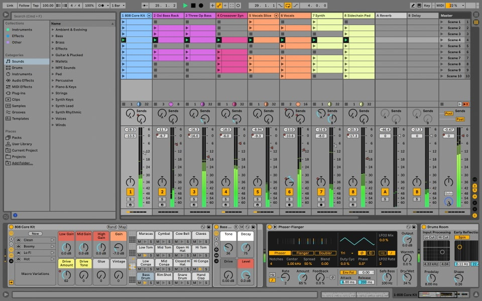
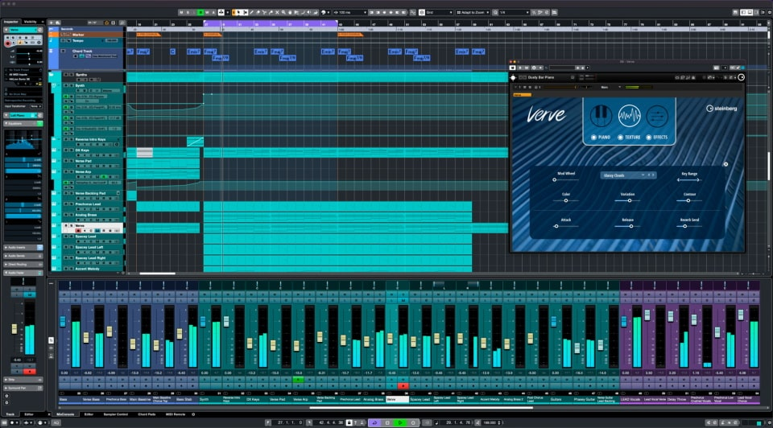

FL Studio est un logiciel de production musicale connu également sous le nom de Fruity Loops. Il
est développé par la société belge Image-Line Software. Il permet de créer, de produire et de
mixer de la musique électronique sur un ordinateur personnel. Il offre une variété d'outils pour
l'enregistrement, l'édition, la manipulation et la manipulation de pistes audio, ainsi que des
fonctionnalités de synthétiseur virtuel, de boîte à rythmes et d'effets pour créer des morceaux
de musique complets. Il est très populaire auprès des DJ, producteurs de musique et musiciens
amateurs pour sa facilité d'utilisation et sa grande variété de fonctionnalités.
Interface du logiciel FL Studio
FL Studio contient une variété de fonctionnalités pour la production musicale:
Éditeur de pistes: permet de créer, de modifier et de synchroniser des pistes audio
et MIDI.
Synthétiseurs virtuels: offre une variété de synthétiseurs, y compris des
synthétiseurs FM, des synthétiseurs à ondes, des synthétiseurs à modélisation physique, et
plus encore.
Boîtes à rythmes: offre une variété de boîtes à rythmes, y compris des boîtes à
rythmes de batterie, des boîtes à rythmes de basse, des boîtes à rythmes de percussions, et
plus encore.
Effets: offre une variété d'effets audio, tels que des réverbérations, des delays,
des filtres, des distorsions, des égalisations, et plus encore.
Enregistrement audio: permet d'enregistrer des pistes audio en direct à partir d'un
microphone ou d'une interface audio.
Mixage et mastering: offre des outils pour mixer les pistes et pour les mastering
pour les rendre plus professionnel.
Automatisation: permet de créer des courbes d'automatisation pour les paramètres de
plugins et de pistes.
Prise en charge de plusieurs formats: prend en charge les formats audio tels que
WAV, MP3, OGG, MIDI, et plus encore.
Prise en charge de plusieurs plateformes: est disponible pour Windows et Mac.
Interface utilisateur personnalisable: permet de personnaliser l'interface
utilisateur pour s'adapter à vos besoins de production.
Ableton Live
Add more feeling to your music
Ableton Live est un logiciel de production musicale qui permet à l'utilisateur de créer,
enregistrer, produire et mixer de la musique électronique. Il offre des fonctionnalités de
composition en temps réel, de manipulation de clips audio et de contrôle MIDI. Il existe en deux
versions: Ableton Live Standard et Ableton Live Suite. La version Suite inclut des instruments
virtuels et des effets supplémentaires. Ableton Live est utilisé par de nombreux musiciens,
producteurs et DJ pour créer de la musique en studio et pour les performances en direct.

Interface du logiciel Ableton Live
Ableton Live possède de nombreuses fonctionnalités pour la création, l'enregistrement et le
mixage de la musique électronique. Voici quelques-unes des fonctionnalités principales:
Composition en temps réel: Ableton Live permet de créer des morceaux en utilisant des
clips audio et MIDI qui peuvent être lancés, synchronisés et bouclés en temps réel.
Enregistrement audio et MIDI: Ableton Live permet d'enregistrer des pistes audio et
MIDI
à partir de sources externes, comme des instruments électroniques ou des microphones.
Edition audio et MIDI: Ableton Live possède des outils d'édition pour couper,
découper,
déplacer et retravailler les clips audio et MIDI.
Effets audio et MIDI: Ableton Live inclut une variété d'effets audio et MIDI pour
ajouter de la profondeur et de la texture à vos morceaux.
Instruments virtuels: La version Ableton Live Suite inclut des instruments virtuels,
tels que des synthétiseurs, des boîtes à rythmes et des instruments acoustiques
virtuels.
Mixage: Ableton Live permet de mixer les différentes pistes audio et MIDI pour créer
une
balance sonore équilibrée dans votre morceau.
Performance en direct: Ableton Live est conçu pour les performances en direct, avec
des
fonctionnalités telles que le lancement de clips en temps réel et la possibilité de
contrôler les paramètres en direct à l'aide d'un contrôleur MIDI externe.
Bitwig Studio
Modern music production and performance for Windows, macOS, and
Linux.
Bitwig Studio est un logiciel de production musicale pour Windows, macOS, et Linux. Il permet à
l'utilisateur de créer, enregistrer, produire et mixer de la musique électronique. Il offre des
fonctionnalités de composition en temps réel, de manipulation de clips audio et de contrôle
MIDI, similaires à Ableton Live. Il inclut des instruments virtuels, des effets audio, des
outils de mixage et d'édition, ainsi qu'un support pour les contrôleurs MIDI externes. Bitwig
Studio est souvent comparé à Ableton Live en raison de sa fonctionnalité similaire, mais il
ajoute des fonctionnalités uniques telles que la modélisation de l'onde sonore, la polyvalence
de modélisation de l'onde de forme d'onde, et un système de modulation modulaire. Il est utilisé
par de nombreux producteurs, musiciens et DJ pour créer de la musique en studio et pour les
performances en direct.
Interface du logiciel Bitwig Studio
Bitwig Studio possède de nombreuses fonctionnalités pour la création, l'enregistrement et le
mixage de la musique électronique. Voici quelques-unes des fonctionnalités principales:
Composition en temps réel: Bitwig Studio permet de créer des morceaux en utilisant
des clips audio et MIDI qui peuvent être lancés, synchronisés et bouclés en temps réel.
Enregistrement audio et MIDI: Bitwig Studio permet d'enregistrer des pistes audio et
MIDI à partir de sources externes, comme des instruments électroniques ou des microphones.
Edition audio et MIDI: Bitwig Studio possède des outils d'édition pour couper,
découper, déplacer et retravailler les clips audio et MIDI.
Effets audio et MIDI: Bitwig Studio inclut une variété d'effets audio et MIDI pour
ajouter de la profondeur et de la texture à vos morceaux.
Instruments virtuels: Bitwig Studio inclut des instruments virtuels, tels que des
synthétiseurs, des boîtes à rythmes et des instruments acoustiques virtuels.
Mixage: Bitwig Studio permet de mixer les différentes pistes audio et MIDI pour
créer une balance sonore équilibrée dans votre morceau.
Performance en direct: Bitwig Studio est conçu pour les performances en direct, avec
des fonctionnalités telles que le lancement de clips en temps réel et la possibilité de
contrôler les paramètres en direct à l'aide d'un contrôleur MIDI externe.
Système de modulation modulaire: Bitwig Studio inclut un système de modulation
modulaire pour créer des relations modulatoires entre différents paramètres.
Modélisation de l'onde sonore: Bitwig Studio inclut des outils pour la modélisation
de l'onde sonore pour des effets de synthétiseurs.
Polyvalence de modélisation de l'onde de forme d'onde: Bitwig Studio permet de
déformer et de transformer les formes d'onde audio pour créer des sons uniques.
Logic Pro
Terriblement puissant. Merveilleusement créatif.
Logic Pro est un logiciel de production musicale pour Mac. Il permet à l'utilisateur de créer,
enregistrer, produire et mixer de la musique électronique. Il offre des fonctionnalités de
composition en temps réel, de manipulation de clips audio et de contrôle MIDI. Il inclut des
instruments virtuels, des effets audio, des outils de mixage et d'édition, ainsi qu'un support
pour les contrôleurs MIDI externes. Logic Pro est utilisé par de nombreux producteurs, musiciens
et DJ pour créer de la musique en studio et pour les performances en direct.
Interface du logiciel Logic Pro
Logic Pro possède de nombreuses fonctionnalités pour la création, l'enregistrement et le mixage
de la musique électronique. Voici quelques-unes des fonctionnalités principales:
Composition en temps réel: Logic Pro permet de créer des morceaux en utilisant des
clips audio et MIDI qui peuvent être lancés, synchronisés et bouclés en temps réel.
Enregistrement audio et MIDI: Logic Pro permet d'enregistrer des pistes audio et MIDI
à partir de sources externes, comme des instruments électroniques ou des microphones.
Edition audio et MIDI: Logic Pro possède des outils d'édition pour couper, découper,
déplacer et retravailler les clips audio et MIDI.
Effets audio et MIDI: Logic Pro inclut une variété d'effets audio et MIDI pour
ajouter de la profondeur et de la texture à vos morceaux.
Instruments virtuels: Logic Pro inclut des instruments virtuels, tels que des
synthétiseurs, des boîtes à rythmes et des instruments acoustiques virtuels.
Mixage: Logic Pro permet de mixer les différentes pistes audio et MIDI pour créer une
balance sonore équilibrée dans votre morceau.
Performance en direct: Logic Pro est conçu pour les performances en direct, avec des
fonctionnalités telles que le lancement de clips en temps réel et la possibilité de
contrôler les paramètres en direct à l'aide d'un contrôleur MIDI externe.
Fonctionnalités avancées de composition: Logic Pro inclut des fonctionnalités
avancées pour la composition, telles que des outils pour la création de rythmiques, des
outils pour la création de boucles, et des outils pour la création de motifs.
Outils de mixage professionnels: Logic Pro inclut des outils de mixage professionnels
pour créer des balances sonores équilibrées et pour ajouter des effets professionnels à vos
morceaux.
Support pour les plug-ins: Logic Pro supporte les plug-ins VST et AU pour ajouter
encore plus de fonctionnalités à votre workflow de production musicale.
Cubase
Cubase is one of the most powerful
music creation software packages in the world. With its unrivaled range of flexible tools, you
can create any kind of music quickly and intuitively.
Cubase est l'un des logiciels de production musicale les plus puissants au monde. Avec sa gamme
incroyable d'outils flexibles, vous pouvez créer n'importe quel genre de musique rapidement et
intuitivement. Il est utilisé par des producteurs, des musiciens et des ingénieurs du son
professionnels pour créer de la musique de tous les genres. Il offre des fonctionnalités de
composition en temps réel, des outils de mixage professionnels, des instruments virtuels et des
effets audio, ainsi qu'un support pour les plug-ins VST.

Interface du logiciel Cubase
Cubase possède de nombreuses fonctionnalités pour la création, l'enregistrement et le mixage de
la musique. Voici quelques-unes des fonctionnalités principales:
Composition en temps réel: Cubase permet de créer des morceaux en utilisant des clips
audio et MIDI qui peuvent être lancés, synchronisés et bouclés en temps réel.
Enregistrement audio et MIDI: Cubase permet d'enregistrer des pistes audio et MIDI à
partir de sources externes, comme des instruments électroniques ou des microphones.
Edition audio et MIDI: Cubase possède des outils d'édition pour couper, découper,
déplacer et retravailler les clips audio et MIDI.
Effets audio et MIDI: Cubase inclut une variété d'effets audio et MIDI pour ajouter
de la profondeur et de la texture à vos morceaux.
Instruments virtuels: Cubase inclut des instruments virtuels, tels que des
synthétiseurs, des boîtes à rythmes et des instruments acoustiques virtuels.
Mixage: Cubase permet de mixer les différentes pistes audio et MIDI pour créer une
balance sonore équilibrée dans votre morceau.
Prise en charge de plug-ins VST: Cubase permet d'utiliser des plug-ins VST pour
étendre les fonctionnalités du logiciel et ajouter des effets audio et des instruments
virtuels supplémentaires.